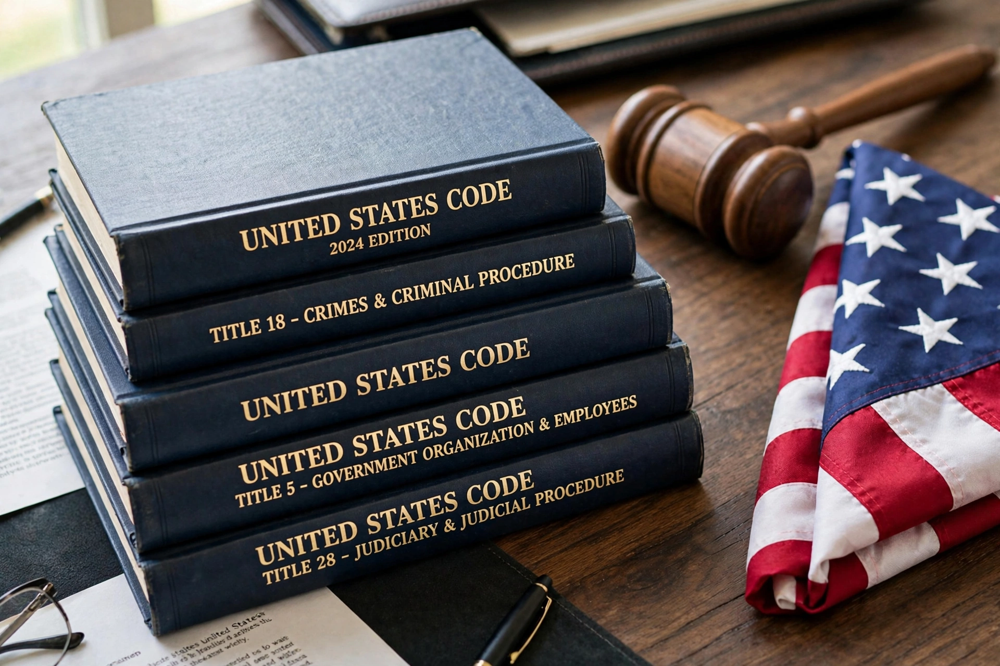

| Uniform Code of Military Justice | |
|---|---|
 | |
| Enacted | 5 May 1950 |
| Effective | 31 May 1951 |
| Citation | 10 U.S.C. §§ 801–946a |
| Signed by | President Harry S. Truman |
| Applies to | US armed forces and other specified persons |
The Uniform Code of Military Justice (UCMJ) is the foundation of military law in the United States. Enacted by Congress in 1950 and effective from 31 May 1951, it unified the previously separate disciplinary systems of the Army, Navy, and Air Force into a single code, codified at Title 10 of the United States Code, sections 801 to 946a. Its detailed rules of procedure are set out in the Manual for Courts-Martial.
The UCMJ applies to active-duty service members, reservists in specified statuses, cadets and midshipmen, military prisoners, and in limited circumstances retirees and civilians accompanying forces in the field. Its punitive articles cover ordinary crimes (murder, rape, larceny) as well as purely military offences unknown to civilian law: absence without leave (Article 86), desertion (Article 85), disrespect toward a superior officer (Article 89), failure to obey orders (Article 92), and conduct unbecoming an officer (Article 133). Article 134, the "General Article", prohibits disorders and neglects prejudicial to good order and discipline.
Justice under the code is administered through courts-martial of three grades and through non-judicial punishment under Article 15. The military justice system maintains its own appellate courts, culminating in the Court of Appeals for the Armed Forces, with review by the US Supreme Court possible. Major reforms, notably those of 2016 effective in 2019 and the 2022 creation of Offices of Special Trial Counsel, have shifted prosecutorial discretion for serious offences away from commanders toward independent military prosecutors.